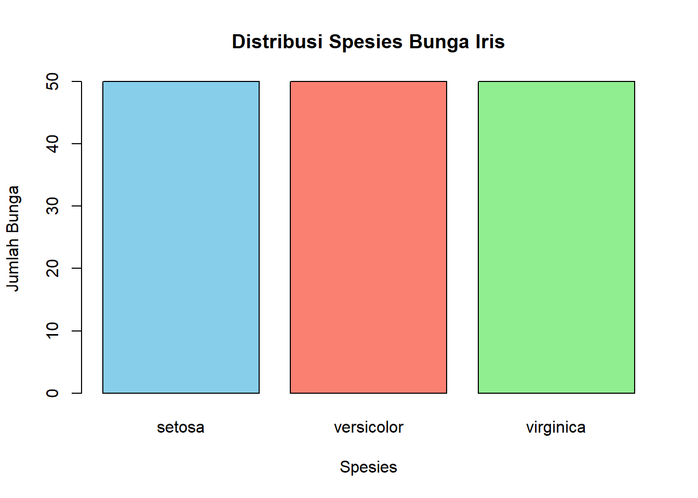
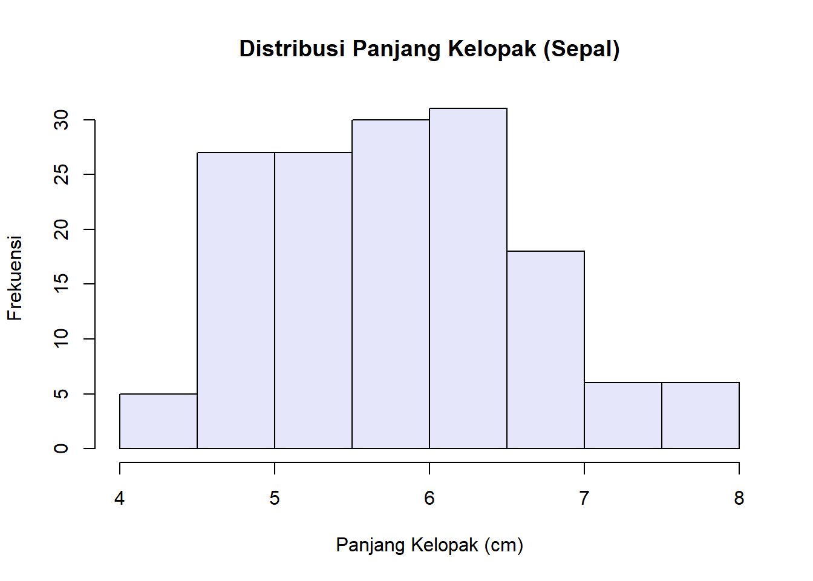

# Operasi dasar
2 * (5 + 3)[1] 16# Menyimpan hasil ke variabel
lebar_kelopak <- 2.5
panjang_kelopak <- 4.5
luas_kelopak <- lebar_kelopak * panjang_kelopak
luas_kelopak[1] 11.25Studi Kasus: Analisis Dataset Bunga Iris
Tim Asisten Lab Matematika UI
September 11, 2025
Kembali ke Arsip Praktikum PSD 2025
Setelah menyelesaikan modul ini, mahasiswa diharapkan mampu:
.csv ke dalam R sebagai sebuah data frame.Selamat datang kembali! Di modul sebelumnya, kita sudah berhasil menyiapkan “bengkel” kerja kita. Sekarang, saatnya menggunakan alat-alat tersebut untuk memecahkan kasus pertama kita.
Seorang botanis (ahli tumbuhan) datang kepada kita dengan dataset berisi pengukuran 150 bunga Iris. Data ini terdiri dari tiga spesies berbeda. Sang botanis punya beberapa pertanyaan: 1. “Apa karakteristik umum dari data yang saya kumpulkan ini?” 2. “Apakah ada spesies yang cenderung memiliki kelopak (sepal) yang lebih panjang dibandingkan yang lain?”
Tugas kita adalah menggunakan R untuk mengeksplorasi data, menghitung statistik dasar, dan membuat visualisasi untuk menjawab pertanyaan-pertanyaan tersebut.
iris
Dataset iris adalah data klasik dalam dunia statistika, berisi pengukuran empat fitur (panjang & lebar kelopak dan mahkota bunga) dari tiga spesies Iris. Dataset ini sudah tersedia secara built-in di R, jadi kita bisa langsung menggunakannya.
Sebelum membedah dataset iris, mari kita hangatkan jari kita dengan beberapa operasi dasar yang akan sering kita gunakan.
Seperti yang kita pelajari di modul pertama, R bisa berfungsi sebagai kalkulator. Kita juga bisa menyimpan hasil perhitungan dalam variabel menggunakan <-.
Saat menganalisis data, kita jarang bekerja dengan satu angka saja. Kita akan bekerja dengan sekumpulan data. Di R, cara paling dasar untuk menyimpan sekumpulan data adalah dengan vector, menggunakan fungsi c() (combine).
[1] 2.5 3.1 2.8[1] "setosa" "versicolor" "virginica" Setiap kolom dalam sebuah tabel data di R pada dasarnya adalah sebuah vector.
Sekarang kita siap untuk memulai investigasi. Mari kita muat dan periksa data iris.
Dataset iris sudah tersedia di R. Kita cukup memanggilnya untuk melihatnya.
Sepal.Length Sepal.Width Petal.Length Petal.Width Species
1 5.1 3.5 1.4 0.2 setosa
2 4.9 3.0 1.4 0.2 setosa
3 4.7 3.2 1.3 0.2 setosa
4 4.6 3.1 1.5 0.2 setosa
5 5.0 3.6 1.4 0.2 setosa
6 5.4 3.9 1.7 0.4 setosaUntuk mendapatkan gambaran umum tentang struktur data, gunakan str() (structure).
'data.frame': 150 obs. of 5 variables:
$ Sepal.Length: num 5.1 4.9 4.7 4.6 5 5.4 4.6 5 4.4 4.9 ...
$ Sepal.Width : num 3.5 3 3.2 3.1 3.6 3.9 3.4 3.4 2.9 3.1 ...
$ Petal.Length: num 1.4 1.4 1.3 1.5 1.4 1.7 1.4 1.5 1.4 1.5 ...
$ Petal.Width : num 0.2 0.2 0.2 0.2 0.2 0.4 0.3 0.2 0.2 0.1 ...
$ Species : Factor w/ 3 levels "setosa","versicolor",..: 1 1 1 1 1 1 1 1 1 1 ...Dari sini kita tahu ada 150 observasi, 5 kolom, dan tipe datanya adalah numerik (num) dan kategorik (Factor untuk Spesies).
Untuk menjawab pertanyaan pertama botanis (“Apa karakteristik umum dari data ini?”), kita bisa menggunakan statistik deskriptif.
summary() untuk mendapatkan ringkasan statistik (Min, Median, Mean, Max, Kuartil) untuk setiap kolom numerik. Sepal.Length Sepal.Width Petal.Length Petal.Width
Min. :4.300 Min. :2.000 Min. :1.000 Min. :0.100
1st Qu.:5.100 1st Qu.:2.800 1st Qu.:1.600 1st Qu.:0.300
Median :5.800 Median :3.000 Median :4.350 Median :1.300
Mean :5.843 Mean :3.057 Mean :3.758 Mean :1.199
3rd Qu.:6.400 3rd Qu.:3.300 3rd Qu.:5.100 3rd Qu.:1.800
Max. :7.900 Max. :4.400 Max. :6.900 Max. :2.500
Species
setosa :50
versicolor:50
virginica :50
$.[1] 5.843333[1] 0.8280661[1] 4.3[1] 7.9Ini memberikan kita gambaran umum yang bagus tentang rentang dan pusat data kita.
Sekarang pertanyaan kedua: “Apakah ada spesies yang cenderung memiliki kelopak (sepal) yang lebih panjang?” Untuk menjawab ini, kita perlu memfilter data dan memvisualisasikannya.
Kita ingin melihat data hanya untuk spesies tertentu atau untuk bunga dengan kriteria tertentu. Gunakan fungsi subset().
Sepal.Length Sepal.Width Petal.Length Petal.Width Species
101 6.3 3.3 6.0 2.5 virginica
102 5.8 2.7 5.1 1.9 virginica
103 7.1 3.0 5.9 2.1 virginica
104 6.3 2.9 5.6 1.8 virginica
105 6.5 3.0 5.8 2.2 virginica
106 7.6 3.0 6.6 2.1 virginica Sepal.Length Sepal.Width Petal.Length Petal.Width Species
103 7.1 3.0 5.9 2.1 virginica
106 7.6 3.0 6.6 2.1 virginica
108 7.3 2.9 6.3 1.8 virginica
110 7.2 3.6 6.1 2.5 virginica
118 7.7 3.8 6.7 2.2 virginica
119 7.7 2.6 6.9 2.3 virginica
123 7.7 2.8 6.7 2.0 virginica
126 7.2 3.2 6.0 1.8 virginica
130 7.2 3.0 5.8 1.6 virginica
131 7.4 2.8 6.1 1.9 virginica
132 7.9 3.8 6.4 2.0 virginica
136 7.7 3.0 6.1 2.3 virginicaDengan memfilter, kita bisa melihat bahwa bunga dengan kelopak sangat panjang mayoritas adalah spesies virginica.
Cara terbaik untuk membandingkan adalah dengan visualisasi. Mari kita lihat distribusi frekuensi dari data kita.

Dari sini terlihat bahwa jumlah data untuk setiap spesies sama (50).Sepal.Length.
Histogram ini menunjukkan bahwa mayoritas bunga memiliki panjang kelopak antara 5.5 dan 6.5 cm.Dengan analisis singkat ini, kita bisa kembali ke sang botanis dengan jawaban: 1. Karakteristik umum data menunjukkan panjang kelopak (Sepal) berkisar antara 4.3 hingga 7.9 cm, dengan rata-rata 5.84 cm. 2. Ya, ada spesies yang cenderung memiliki kelopak lebih panjang. Data menunjukkan bahwa bunga dengan panjang kelopak di atas 7 cm hampir seluruhnya adalah spesies virginica.
Petal.Length (panjang mahkota) untuk spesies setosa saja. (Gunakan subset() terlebih dahulu).Petal.Width (lebar mahkota). Beri judul dan warna yang sesuai.Di dunia nyata, data tidak selalu ada di dalam R. Seringkali Anda akan mendapatkannya dalam bentuk file .csv atau .xlsx.
Untuk mengimpor file .csv, Anda perlu library readr.